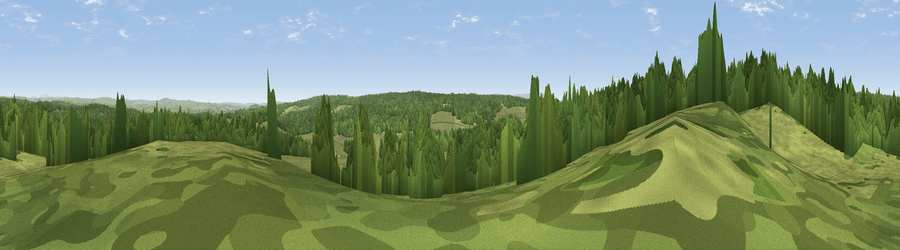

Viewpoint c11540_7525
#26988 in England · top 63% of its area beats it · —Where it is
The exact computed spot (NY 76275 77025). Click the marker for map links.
The view, rendered

A 360° render of this exact spot computed from the terrain model, tree cover and land cover — summer colours, afternoon light, calibrated against photographs of famous viewpoints. Real trees, hedges and buildings will differ in detail.
The panorama
Grey silhouette: terrain skyline in each direction (720 bearings, Earth curvature and refraction included). Dashed green: skyline with trees (+15 m) and buildings (+8 m) as obstacles. Blue strip: how far the ground is visible on each bearing.
Where the view opens
Wedge length = distance to the farthest visible ground on that bearing (vegetation-aware). Rings at 10, 25 and 50 km.
What fills the view
60% woodland · 40% grassland
Angular shares of the visible panorama (visual magnitude), not map area. Landscape diversity 0.30 (0–1 Shannon).
Key numbers
More beautiful places nearby
The staircase of upgrades: each row has a higher view potential than everything closer. Driving times are estimates from straight-line distance, calibrated against real road routing — check an actual route before setting out.
| Place | Direction | Drive | Score |
|---|---|---|---|
| Viewpoint c11541_7484 | W · 2 km | ~5 min | 55.5 |
| Viewpoint c11472_7593 | SE · 5 km | ~11 min | 60.0 |
| Viewpoint c11456_7577 | SSE · 5 km | ~11 min | 63.3 |
| Viewpoint c11477_7613 | SE · 5 km | ~12 min | 68.2 |
| Viewpoint near Greenhaugh | NNE · 6 km | ~12 min | 71.2 |
| Viewpoint c11634_7288 | WNW · 13 km | ~23 min | 71.8 |
| Sighty Crag | WNW · 17 km | ~29 min | 74.7 |
| Viewpoint near Bewcastle | W · 17 km | ~30 min | 76.6 |
55.08709, -2.37322 · source: screening · position refined by local search. Computed location — check access rights before visiting.